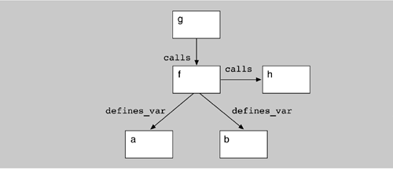

| [ Team LiB ] |
|
10.5 ReconstructionAt this point, the view information has been extracted, stored, and refined or augmented to improve its quality. The reconstruction operates on views to reveal broad, coarse-grained insights into the architecture. Reconstruction consists of two primary activities: visualization and interaction and pattern definition and recognition. Each is discussed next. Visualization and interaction provides a mechanism by which the user may interactively visualize, explore, and manipulate views. In Dali, views are presented to the user as a hierarchically decomposed graph of elements and relations, using the Rigi tool. An example of an architectural view is shown in Figure 10.6. Figure 10.6. An architectural view represented in DaliPattern definition and recognition provides facilities for architectural reconstruction: the definition and recognition of the code manifestation of architectural patterns. Dali's reconstruction facilities, for example, allow a user to construct more abstract views of a software system from more detailed views by identifying aggregations of elements. Patterns are defined in Dali, using a combination of SQL and perl, which we call code segments. An SQL query is used to identify elements from the Dali repository that will contribute to a new aggregation, and perl expressions are used to transform names and perform other manipulations of the query results. Code segments are retained, and users can selectively apply and re-use them. Based on the architectural patterns that the architect expects to find in the system, the reconstructor can build various queries. These queries result in new aggregations that show various abstractions or clusterings of the lower-level elements (which may be source artifacts or abstractions). By interpreting these views and actively analyzing them, it is possible to refine the queries and aggregations to produce several hypothesized architectural views that can be interpreted, further refined, or rejected. There are no universal completion criteria for this process; it is complete when the architectural representation is sufficient to support analysis and documentation. Suppose that our database contains the subset of elements and relations shown in Figure 10.7. In this example variables a and b are defined in function f; that is, they are local to f. We can graphically represent this information as shown in Figure 10.8. Figure 10.7. Subset of elements and relationshipsFigure 10.8. Graphical representation of elements and relationships An architectural reconstruction is not interested in the local variables because they lend very little insight into the architecture of the system. Therefore, we can aggregate instances of local variables into the functions in which they occur. An example of the SQL and perl code to accomplish this is shown in Figure 10.9. The first code portion updates the visual representation by adding a "+" after each function name. The function is now aggregated together with the local variables defined inside it. The SQL query selects functions from the elements table, and the perl expression is executed for each line of the query result. The $fields array is automatically populated with the fields resulting from the query; in this case, only one field is selected (tName) from the table, so $fields[0] will store its value for each tuple selected. The expression generates lines of the form: Figure 10.9 SQL and perl to aggregate local variables to the function in which they are defined
#Local Variable aggregation
SELECT tName
FROM Elements
WHERE tType='Function';
print ''$fields[0]+ $fields[0] Function\n'';
SELECT d1.func, d1.local_variable
FROM defines_var d1;
print ''$fields[0] $fields[1] Function\n'';
<function>+ <function> Function this specifies that the element <function> should be aggregated into <function>+, which will have the type Function. The second code portion hides the local variables from the visualization. The SQL query identifies the local variables for each function defined by selecting each tuple in the defines_var table. Thus in the perl expression, $fields[0] corresponds to the func field and $fields[1] corresponds to the local_ variable field. So the output is of the form: <function>+ <variable> Function That is, each local variable for a function is to be added to that function's <function>+ aggregate. The order of execution of these two code segments is not important, as the final results of applying both of these queries is sorted. The result of applying the code segments is represented graphically in Figure 10.10. Figure 10.10. Result of applying the code segment in Figure 10.9
The primary mechanism for manipulating the extracted information is inverse mappings. Examples include the following:
An example of a query that identifies an architectural element is shown in Figure 10.11. This query identifies the Logical_Interaction architectural element, and says that if the class name is Presentation, Bspline, or Color, or if the class is a subclass of Presentation, it belongs in the Logical_Interaction element. Code segments are written in this way for abstracting from the lower-level information to generate architecture-level views. The reconstructor builds these segments to test hypotheses about the system. If a particular segment does not yield useful results, it can be discarded. The reconstructor iterates through this process until useful architectural views have been obtained. Figure 10.11 Query to identify the Logical_Interaction element
SELECT tSubclass
FROM has_subclass
WHERE tSuperclass='Presentation';
print ''Logical_Interaction $fields[0]'';
SELECT tName
FROM element
WHERE tName='Presentation'
OR tName='BSpline'
OR tName='Color';
print ''Logical_Interaction $fields[0]'';
GUIDELINESThe following are some practical considerations in applying this step of the method.
|
| [ Team LiB ] |
|